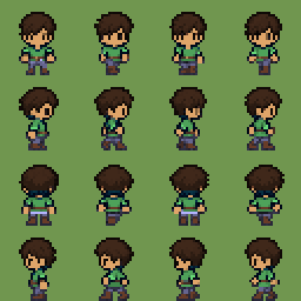
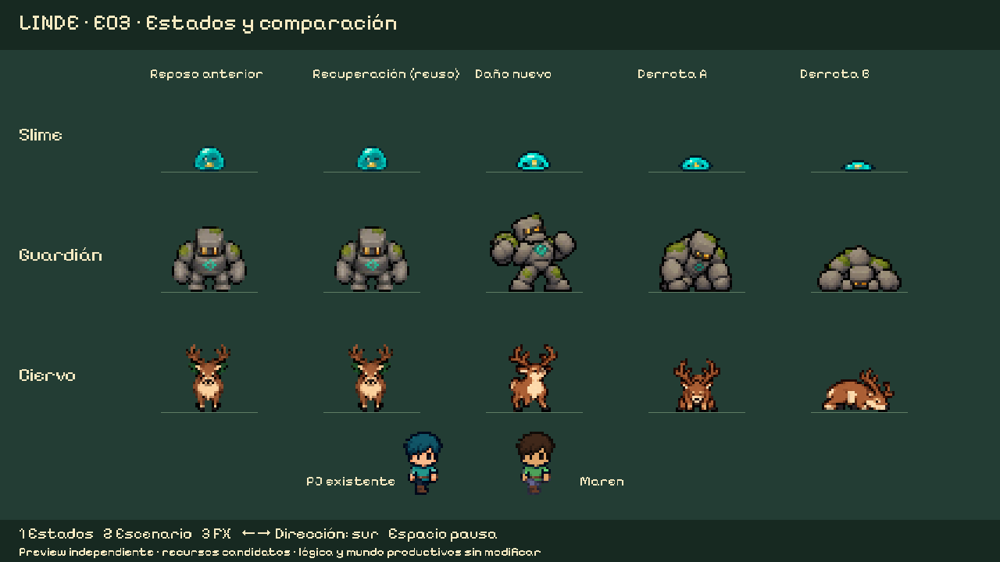
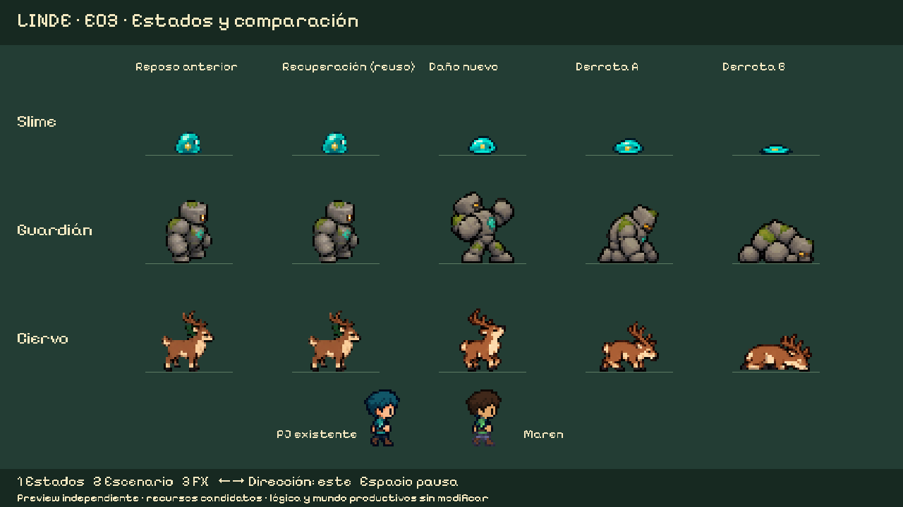
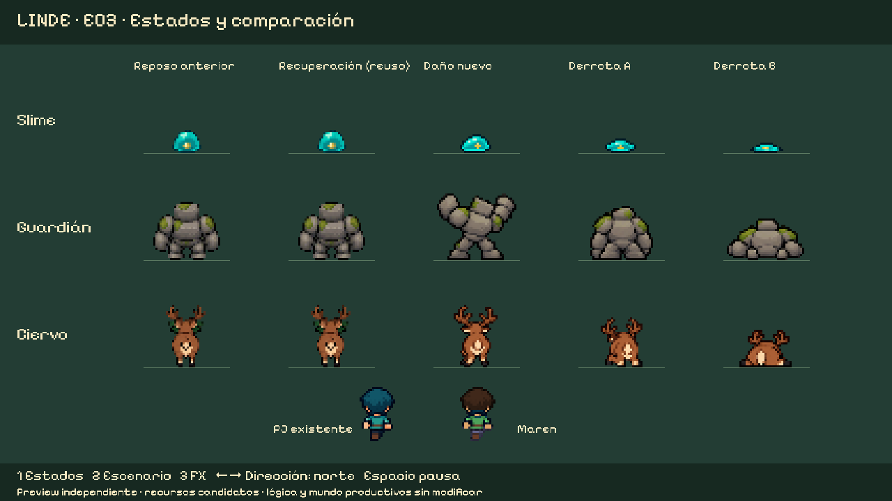
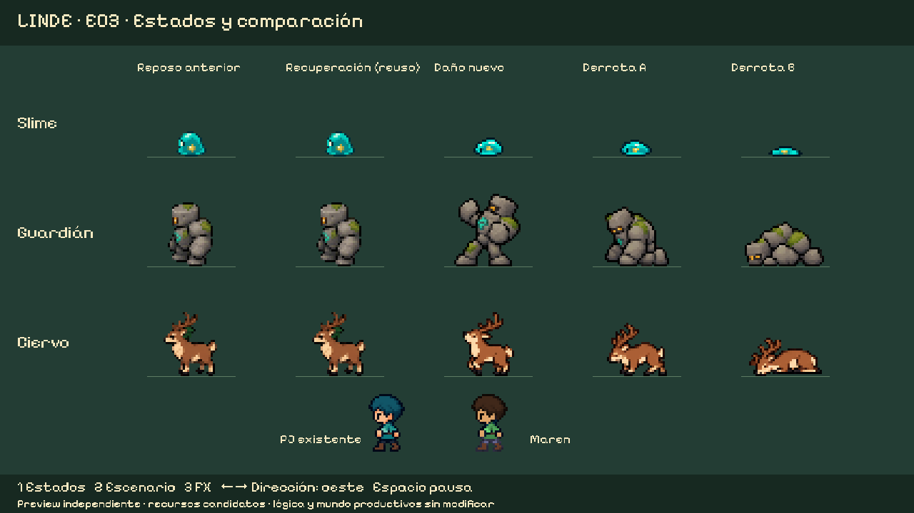
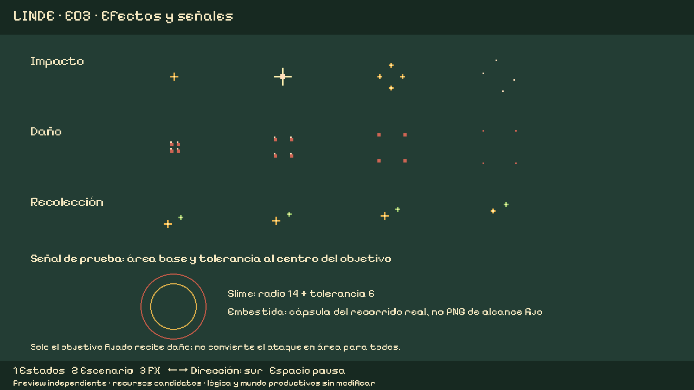
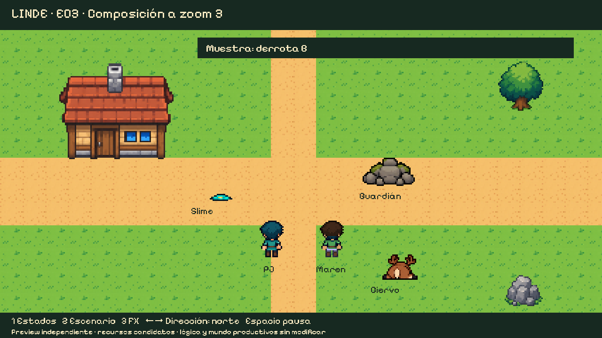
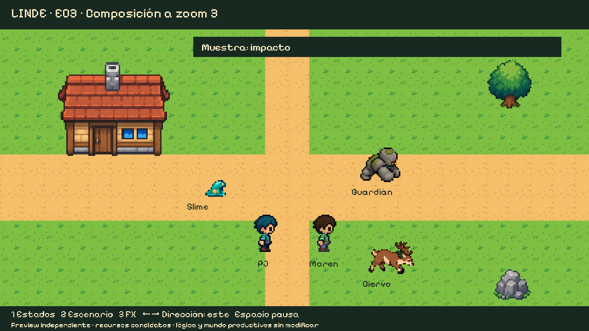
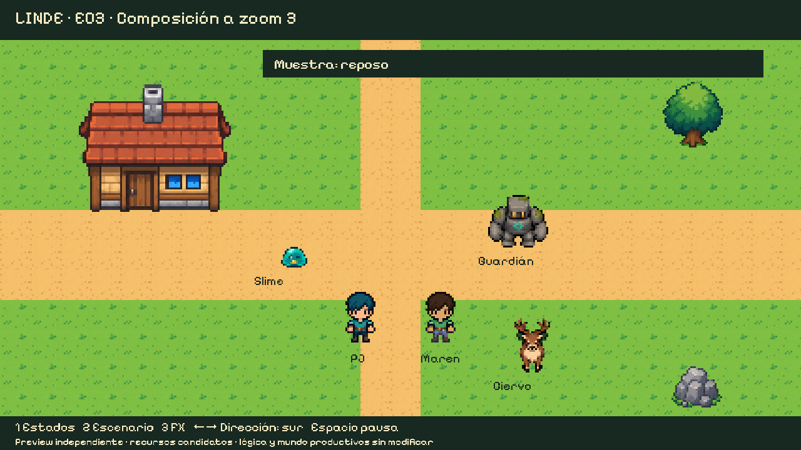

Candidatos de los tres enemigos actuales, NPC modulares y efectos. Se mantiene el arte y la lógica de Linde; el otro proyecto aporta referencias. No hay integración al juego activo ni incorporación automática de sus jefes. La diferencia de detalle casa/actores observada por el usuario sigue pendiente de coordinación.
Informe · Integración · Reparto PJ/NPC · Validación · Detalle visual pendiente
Dirección Estado
Reproducción de revisión; su ritmo no sustituye los tiempos del juego.
Evaluación de24diseños · Contacto pintado/pixel · Variantes elementales
Kit modular y límites · Presets. Las composiciones son ejemplos, no nuevas bases de personaje.








